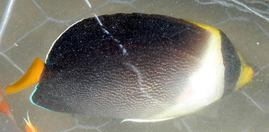

|
|
| fishes text index | photo index |
| Phylum Chordata > Subphylum Vertebrata > fishes > Family Pomacanthidae |
| Yellowtail or Vermiculated angelfish Chaetodontoplus mesoleucus Family Pomacanthidae updated Sep 2020 Where seen? Adults sometimes seen in fish traps. The adults are found solitary or in pairs, in silty reefs and sheltered lagoons. Features: To about 18cm. Body oval with yellow tail, blackish, purplish brown rear portion and dorsal and anal fins, and a black bar on the head over the eyes. Large spine on the gill cover. Juveniles are bluish-black with white and blue narrow bars on the sides. |
 An adult caught in a fish trap. Kusu Island, Jun 04 |
 Terumbu Pempang Tengah, Jul 12 Photo shared by Loh Kok Sheng on flickr. |
| What does it eat? It eats sponges,
ascidians and filamentous algae. Human uses: It is frequently sold in the aquarium trade. |
| Vermiculated angelfishes on Singapore shores |
On wildsingapore
flickr
|
Links
|